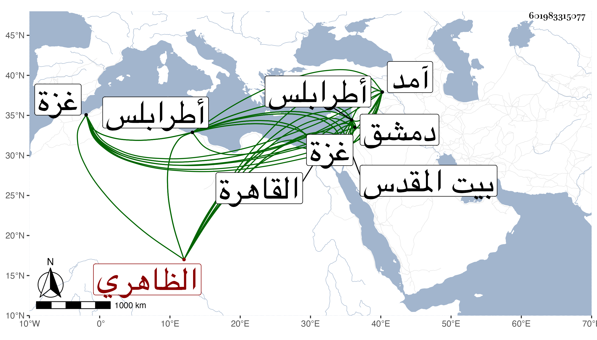

0902Sakhawi.DawLamic.ITO20230111-ara1.EIS1600.601983315077
Biography ID: 601983315077
19
طرباي الظاهري برقوق . كان من رؤوس الفتن في أيام الناصر فرج ثم أنعم عليه المؤيد بامرة طبلخاناه ووجهه في الرسلية لنوروز ثم أعطاه نيابة غزة ثم كان ممن فر منه لقرا يوسف فلما دخل ططر بالمظفر لدمشق قدم عليه فرحب به فلما تسلطن عمله حاجب الحجاب وقدم معه القاهرة ثم نقل في أيام ابنه إلى الأتابكية ثم أمسكه برسباي قبل سلطنته وحبسه باسكندرية ثم أرسل به بعدها إلى القدس بطالا ثم أعطاه نيابة طرابلس فباشرها مدة ثم قدم عليه فأكرمه جدا ورجع على نيابته ثم كان ممن سافر معه إلى آمد ، واستمر بطرابلس حتى مات بها فجأة عقب صلاة الصبح وهو بمصلاه يوم السبت رابع رجب سنة سبع وثلاثين وقد أناف على الستين وكان فيما قيل أميرا جليلا شجاعا دينا عفيفا عن القاذورات غزير العقل حسن الشكالة ضخما مع إقدام وتكبر وميل لأبناء جنسه الجراكسة .
